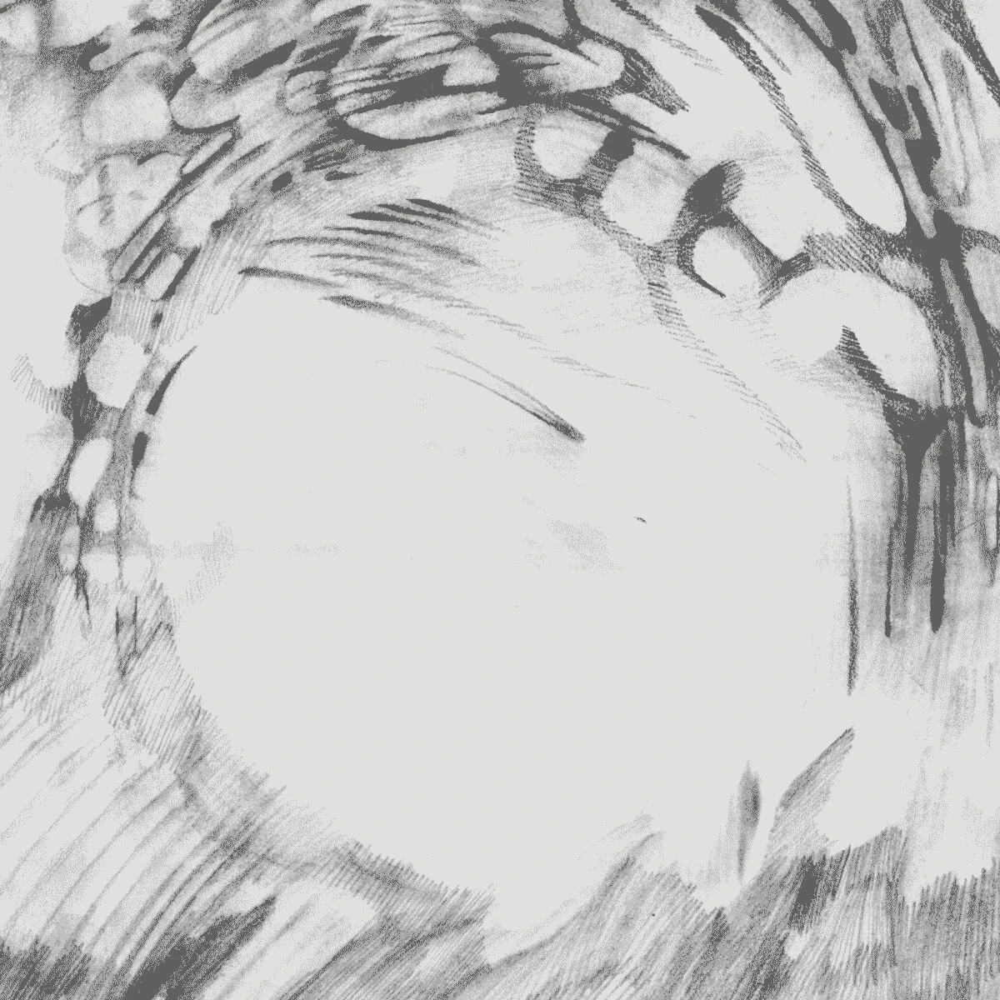
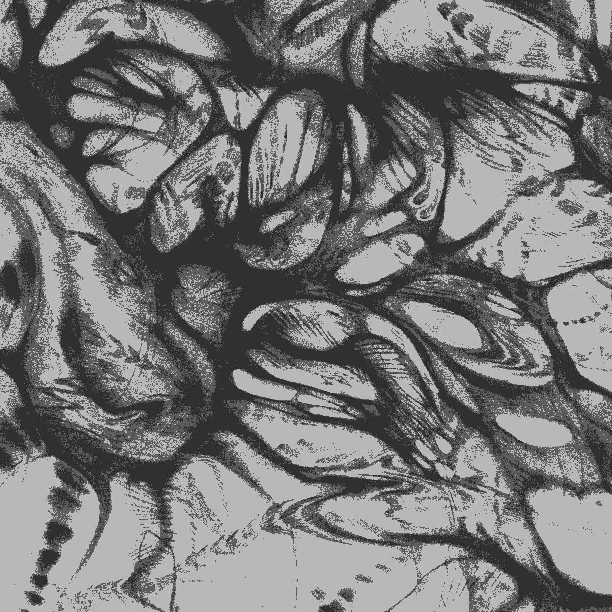
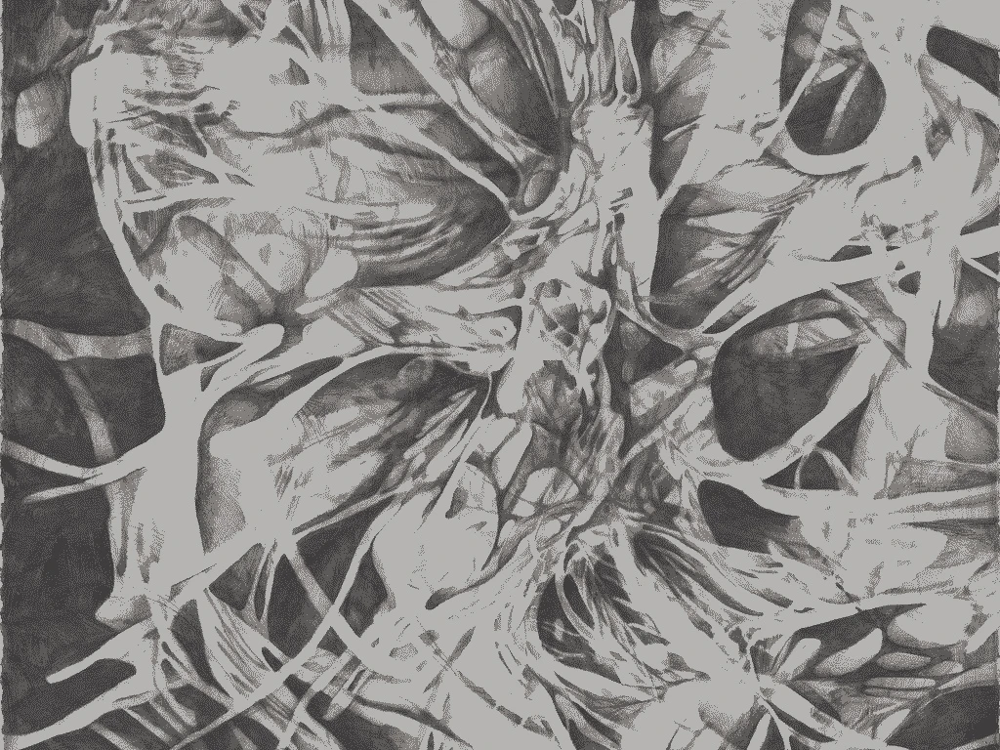

I have another release out on my bandcamp today, this one is part of my thesis, exploring my diy instruments as ritual objects unique in their character. Most of the release explores the xiaohongshu gewei, a marriage of an old ciat lonbarde instrument and Chinese internet culture. For a while I was seeing if I could train my Instagram algorithm to feed me only content screen-grabbed from xiaohongshu , basically chinas version of Instagram, with some success, for fun. Thinking about location and geography, especially with material, sonic content and atmosphere, and how that changes depending on where you are. Continuing to explore creating impossible or experimental atmospheres and spaces with sound. I really love Peter Blassers circuits, they have such character and organic nature to them. They are a wonderful outlet to explore this connection between the internet, electronics and nature, and have been very inspiring to my design philosophy in music and architecture. I hope to explore these ideas more through instrumentation and sonic landscapes in future releases, as well as more collaborations with maybe some more musical musicians. The internet is such a funny place, I’m not so much influenced by meme culture as much as I’m influenced by this idea of interconnectivity and call and response as evolution of content, catalogs of life or hyper specific portfolios, in narcissistim and empathy. Instagram is so not a real place and that’s what’s so awesome about it. “The idea of the internet being infinite played with my perception of time and data. Sometime around 2018 I became very obsessed with archiving and documenting things well, and putting out as much content on the internet as a cloud, as a personal archive and also to build my relationship with this infinite void that was the internet. Most of this content was through Instagram and Youtube.” The yappepedium was an ancient hall crystallized with the fossils of skulls of those whose words echoes quiet landscapes with nonsensical strings of words.
This release is an collection and data log of atmosphere and gas clouds. This album is part of the series of albums towards my thesis. This release focuses on themes of space and expedition, atmosphere, satellite, probes, beacons, drones and scientific research. Of relation to my thesis: a vessel travels, what is the sound of travel, and how it relates to the body. What is the sound of travel in dreams, of disappearance. The acoustics of a missing object. How can we amplify sound in space for the purpose of found objects, a directional scan.
Live Pictures in Music is an album exploring the ritual practice of live performance. theres something about performing in the dark i want people to focus on the sound its not the image if it is some sonic architecture transporting themselves into a new space into my space A darkness a sad noise “great set brother” in genuine with little thought for words In my music A Jazz Or some sampled white girl asmr video An abstraction For contrast In genuine A homage To early internet On blue screens What is it about A vlog of a white gorl learning how to wine for the first time A Starbucks in the favela An interest in culture In genuine With little thought for words Things my handy husband made for me to make my morning routine easier! My husband 3d printed this hook for my shower to hang my clothes so I can easily pick the perfect outfit in the morning Whilst empty content A rap of words The pumpkin spice latte is back in stock I think it’s hilarious Along with the stereotypes My black father is married to a white woman Raised by my African mother A strange interaction With kids on walk street And artsy students at school With their succulents and skirts over jeans Which I’ll never understand that style They feel is genuine With their hook in the shower to early pick out the perfect outfit in the morning With little thought for words In a strange environment With the lights off A performance An obsession with the internet Without hooks I’ve leaned everything backwards My mother didnt know about slavery until coming to the us in her 20s And didn’t properly understand it until her 40s My dad knew in genuine With little thought for words To talk about it before they separated I’ve learned everything backwards The “great set brother” But at the same time When I tell people my color I make music They still assume I make beats “The drum is central to the music” But if corse The internet I would find out about Romanian minimal techno Before finding the roots of house and techno in Chicago and Detroit Due to my attraction in the esoteric and obscure natures of sound I’m interested in the evolutions of sounds And I can most often spot out when something’s evolved from a source Because it’ll be weird And I like that In genuine With sometimes little thought For how did we get here But Im not bothered by this backwards learning Or by the evolution It’s all beautiful In noise I’m sure has its roots in black culture I’m often the dark room in the performance In dj culture When did it switch from the rich underground “Dancing to be free” In genuine With little regard for words An escape from the 9-5 Friday night to Monday morning At the palladium To $150 tickets For 4 hours A boiler room A boiler room That’s supposed to be that room hidden in the corner, the secret party That no one knows about For the culture In genuine Not the image Of the dj in the center They are not the priest But why do I care In all this sampled content In conversation In relationships In genuine I still give thanks to the ground beneath my feet In dead languages “The drum is central to the music” My feet are buried deep within the sounds that surround me In colliding cultures I try to find rythm In noise As Jazz With soul With sound as words To tell my story In non Linear nature As time passes With no regard to those who make comments in genuine with little regard for words I cannot entertain A blackness Can be defined by performing in the dark Not everything shall be a rap Of words At the Boiler Room In a well of water The drum is the oldest form of communication On dark sweaty floors My shoes chained to the bass A resonating frequency A room full of reflections And bodies absorbing
RITUAL is the first release in a series of Albums I'll be releasing every month for a year as part of my thesis. This series focuses on ideas of sound as ritual practice along with themes of architecture, dreams, land acknowledgment, academia, indigenous practices, sexuality, love and relationships and the internet. The purpose of this series is to really dive into the idea of recorded improvisation as a ritual practice and generative/algorithmic systems as a connection to nature and the organic/organism. Sadnoise has always been as much about the conversation between the internet and nature or the "absence" of the internet as it has been about the interaction between produced or manipulated sound and physical space.
 Artwork by Hannah Rosies
SYSTEMS is an album archiving written and sonic explorations of various analog and digital systems that I use during the process of designing sound, as an attempt to demystify some synth esoteria.
Listening Instructions (suggested): Listen to this album in full or in smaller periods of time, in direct sunlight, or a low lit environment, preferably with headphones, or speakers spread far apart. Sit or lay down in a comfortable place and position. Have your favorite snacks or beverages nearby for occasional consumption. Read the track stories as the corresponding tracks play.
See Documentation.